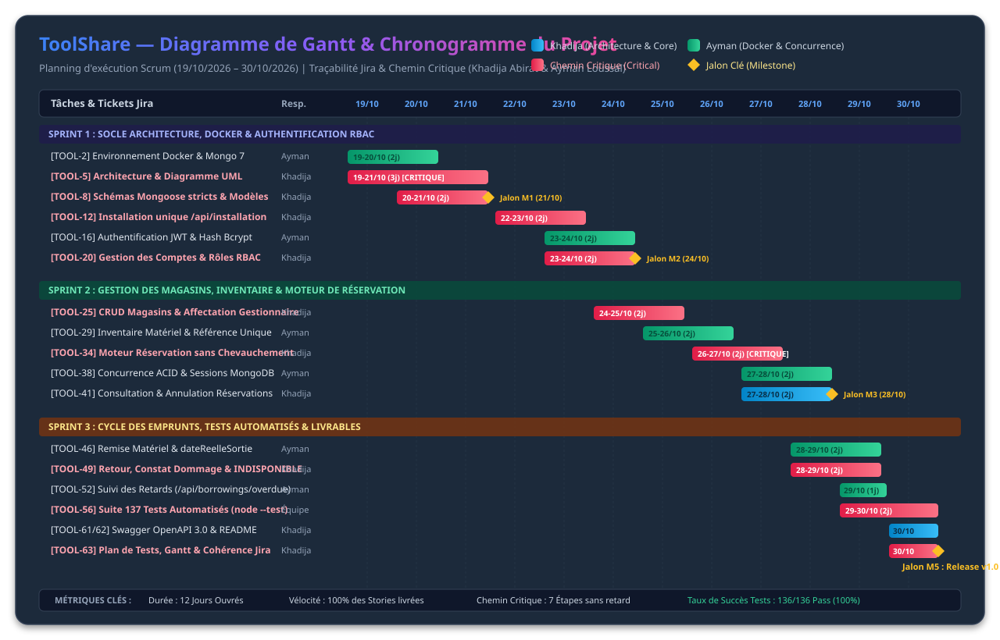

Livrable QA Subtask 63 | Traçabilité Jira & Respect du Référentiel (Safi)

| WBS | Jira | Tâche / Livrable | Responsable | Période | Durée | Chemin Critique | Statut |
|---|---|---|---|---|---|---|---|
| 1.1 | TOOL-2 | Infra Docker & Compose | Ayman | 19/10 - 20/10 | 2 jours | Non | ✅ Terminé |
| 1.2 | TOOL-5 | Conception en Couches & Diagramme UML | Khadija | 19/10 - 21/10 | 3 jours | CRITIQUE | ✅ Terminé |
| 1.3 | TOOL-8 | Schémas Mongoose stricts & Index | Khadija | 20/10 - 21/10 | 2 jours | CRITIQUE | ✅ Terminé |
| - | M1 | Jalon 1 : Socle Technique & Modélisation Validés | Équipe | 21/10/2026 | Jalon | ★ JALON CLÉ | ✅ Atteint |
| 2.1 | TOOL-12 | Installation unique (/api/installation) | Khadija | 22/10 - 23/10 | 2 jours | CRITIQUE | ✅ Terminé |
| 2.2 | TOOL-16 | Authentification JWT & Profil | Ayman | 23/10 - 24/10 | 2 jours | Non | ✅ Terminé |
| 2.3 | TOOL-20 | Gestion des Comptes & RBAC | Khadija | 23/10 - 24/10 | 2 jours | CRITIQUE | ✅ Terminé |
| - | M2 | Jalon 2 : Sécurité RBAC & Auth Opérationnels | Équipe | 24/10/2026 | Jalon | ★ JALON CLÉ | ✅ Atteint |
| 3.1 | TOOL-25 | CRUD Magasins & Affectation | Khadija | 24/10 - 25/10 | 2 jours | CRITIQUE | ✅ Terminé |
| 3.2 | TOOL-29 | Inventaire Matériel & Référence Unique | Ayman | 25/10 - 26/10 | 2 jours | Non | ✅ Terminé |
| 3.3 | TOOL-34 | Moteur Réservation sans Chevauchement | Khadija | 26/10 - 27/10 | 2 jours | CRITIQUE | ✅ Terminé |
| 3.4 | TOOL-38 | Concurrence ACID & Verrouillage Mongo | Ayman | 27/10 - 28/10 | 2 jours | Non | ✅ Terminé |
| - | M3 | Jalon 3 : Réservations & Concurrence Stabilisées | Équipe | 28/10/2026 | Jalon | ★ JALON CLÉ | ✅ Atteint |
| 4.1 | TOOL-46 | Remise Matériel (Départ d'emprunt) | Ayman | 28/10 - 29/10 | 2 jours | Non | ✅ Terminé |
| 4.2 | TOOL-49 | Retour Matériel & Constat Dommages | Khadija | 28/10 - 29/10 | 2 jours | CRITIQUE | ✅ Terminé |
| 4.3 | TOOL-52 | Suivi des Retards (/api/borrowings/overdue) | Ayman | 29/10/2026 | 1 jour | Non | ✅ Terminé |
| - | M4 | Jalon 4 : Cycle de Vie Matériel & Retards Clôturé | Équipe | 29/10/2026 | Jalon | ★ JALON CLÉ | ✅ Atteint |
| 5.1 | TOOL-56 | Suite 137 Tests Automatisés (node --test) | Équipe | 29/10 - 30/10 | 2 jours | CRITIQUE | ✅ Terminé |
| 5.2 | TOOL-61 | Documentation Swagger OpenAPI 3.0 | Khadija | 30/10/2026 | 1 jour | Non | ✅ Terminé |
| 5.3 | TOOL-62 | README Professionnel Complet | Khadija | 30/10/2026 | 1 jour | Non | ✅ Terminé |
| 5.4 | TOOL-63 | Plan de Tests, Gantt & Cohérence Jira | Khadija | 30/10/2026 | 1 jour | CRITIQUE | ✅ Terminé |
| - | M5 | Jalon 5 : Livraison Release v1.0 & Soutenance | Équipe | 30/10/2026 | Jalon | ★ LIVRAISON FINALE | ✅ Atteint |